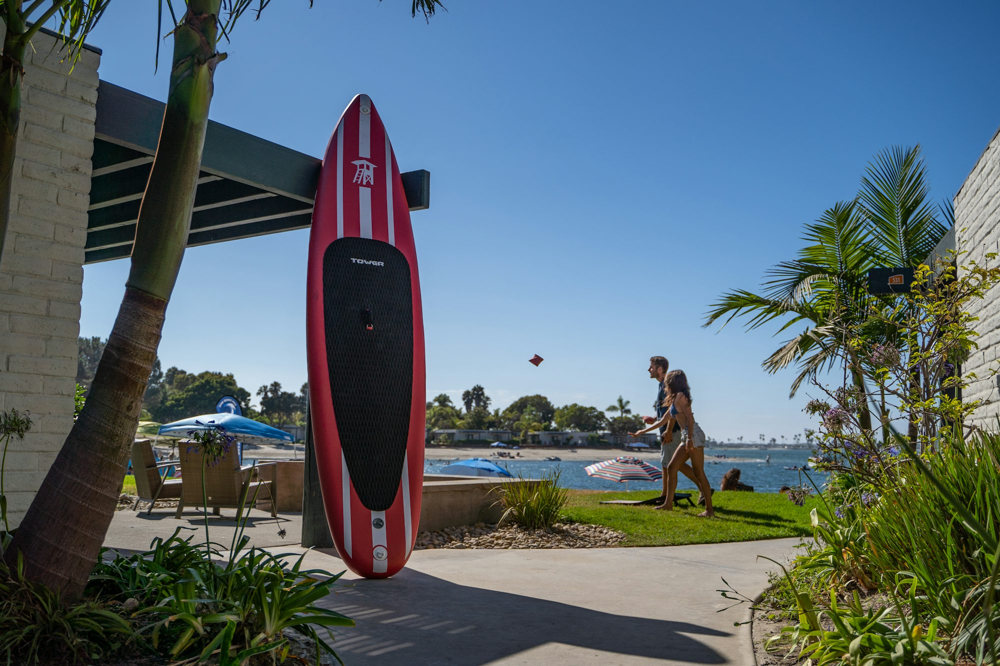
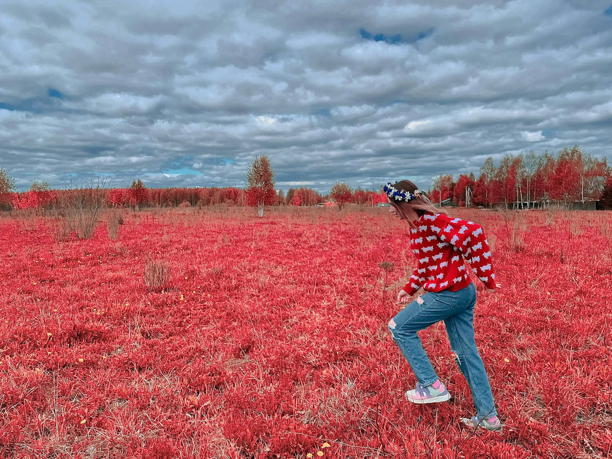
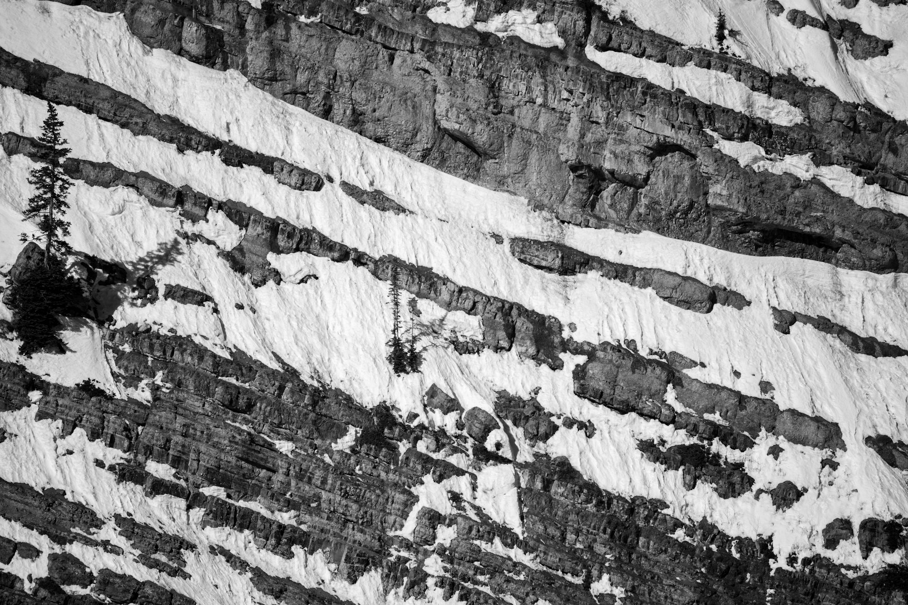
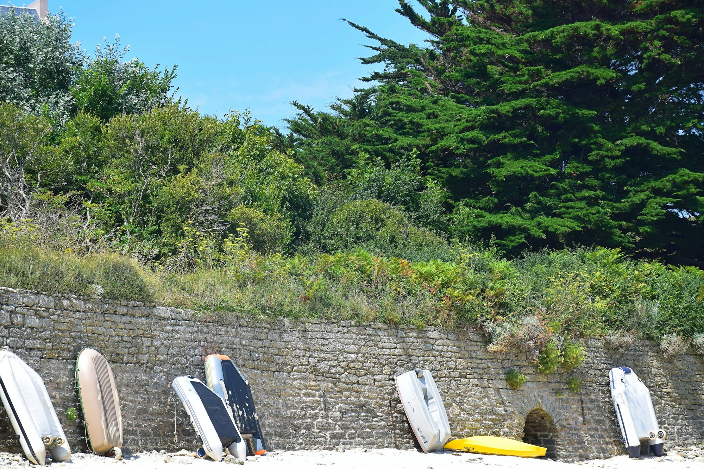

A Comprehensive Guide to Ice Fishing: Techniques and Tips for Success
This article explores the fascinating world of ice fishing, detailing techniques, essential gear, and tips for a successful outing in frozen waters.Showcase




Exploring Skateboarding Styles: A Comprehensive Guide
An in-depth look at the various styles of skateboarding, the skills they require, and the community that supports this dynamic sport.


08-01-2025
Lucas Harrington
Exploring Golf Course Design: The Art and Science Behind the Greens

03-05-2026
Sophia Reynolds
A Journey Through the Underwater World: Discovering the Art of Diving
This article explores the diverse disciplines of diving, detailing the techniques, experiences, and wonders that each style of underwater exploration offers.

11-10-2025
Oliver Smith

Sophie Reynolds
Exploring the World of Golf: Techniques, Trends, and Tips for Every Player
This article explores essential golf techniques, current trends, and practical tips to help players enhance their skills and enjoy the game.
08-25-2025
Jessica Morgan
Exploring the Waves: A Deep Dive into Surfing Styles and Culture
This article provides an in-depth look at various surfing styles, highlighting their unique techniques, cultural significance, and the community that surrounds each discipline.